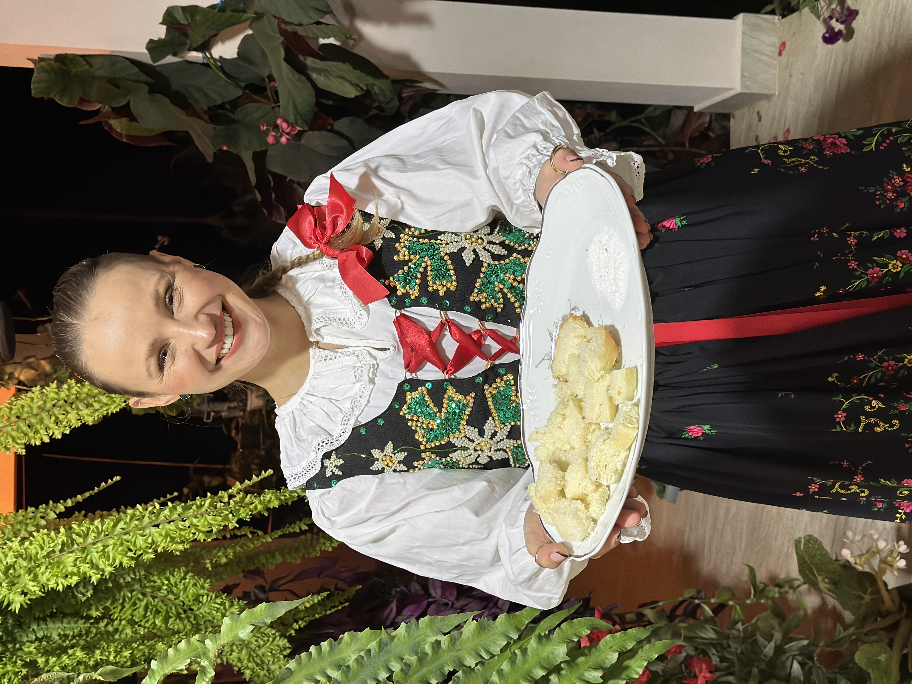
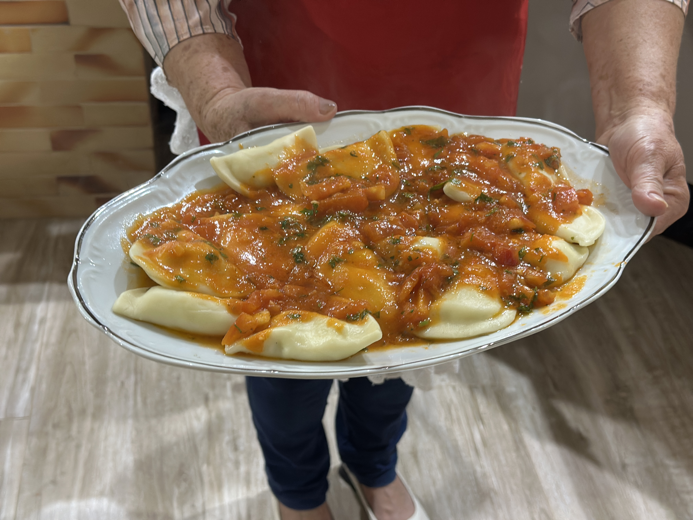

Pierogi Ruskie
Pierogi
Massa recheada com batata e requeijão, servida com cebola dourada e nata. O prato mais emblemático da culinária polonesa.
Onde provar Polskie Smaki, Feira Gastronômica e Baile do Pierogi (CEPOM)
cap. 2 Receituário da cidade
Da tradição polonesa aos sabores do campo. Descubra a gastronomia autêntica da Capital Polonesa do Paraná.

A herança culinária dos imigrantes preservada com amor

Pierogi Ruskie
Massa recheada com batata e requeijão, servida com cebola dourada e nata. O prato mais emblemático da culinária polonesa.
Onde provar Polskie Smaki, Feira Gastronômica e Baile do Pierogi (CEPOM)
Ensopado de repolho fermentado (chucrute) com carnes variadas. Conhecido como "o prato do caçador".
Onde provar Festas das comunidades e Mês Polonês
Gołąbki
Folhas de repolho recheadas com carne e arroz, cobertas com molho de tomate. Tradição em todas as festas.
Onde provar Restaurantes típicos e festas religiosas
Kiełbasa
Linguiça polonesa defumada artesanalmente. Servida grelhada com mostarda e pão preto.
Onde provar Feira do Produtor e açougues locais
Chleb, Kołacz
Pães de fermentação natural e cucas doces com farofa. Receitas centenárias passadas de geração em geração.
Onde provar Padarias locais e Feira do Produtor
Só mostramos fotografias de pratos feitos aqui. Os demais esperam suas fotos — se você é cozinheiro ou produtor local, fale com a Secretaria.

Erva-mate IG São Matheus
A erva-mate com Indicação Geográfica, símbolo da cidade. Tradição que une culturas gaúcha e polonesa.
Compre direto do produtor e viva a experiência gastronômica local
Quartas
Pratos típicos, doces artesanais, bebidas e música ao vivo. O point gastronômico da cidade.
Sábados
Frutas, hortaliças, queijos, embutidos, erva-mate e produtos coloniais direto do campo.
Mensal
Produtos artesanais do bairro: pastéis, xixo, kafta e delícias caseiras.
Data do mês a confirmar na agenda.
Agosto
Festival de comida polonesa com desfile folclórico e concurso Papa Pierogi.
Dias e horários conforme o calendário oficial de eventos de 2026. Confira a agenda antes de ir.
Restaurantes e estabelecimentos gastronômicos
Carregando cadastro oficial…
Visite as propriedades rurais e leve para casa produtos frescos e artesanais.